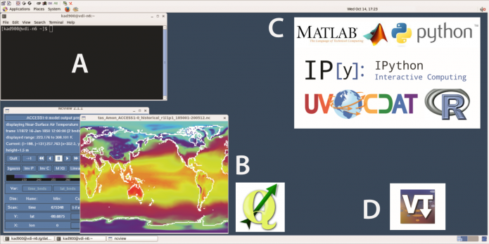

Data Services¶
GeoNetwork¶
You can discover the datasets published and available at NCI using our NCI GeoNetwork catalogue, using ISO19115 compliant data records. As well as the general data catalogue, there are specialist domain information such as the Coupled Model Intercomparison Project (CMIP) service, or Australasia Regional Copernicus Hub. Each collection and constituent dataset has information available as catalogue records in through the NCI GeoNetwork.
NCI GeoNetwork catalogue provides a discoverability and search portal for these datasets. The NCI code listed for each dataset provides the location in the /g/data Lustre filesystem. NCI account holders logging in need to register for access to the data to help us track demand and communicate information about the data to users and stakeholders. The GeoNetwork records also includes a link to THREDDS data service for data that does not require authenticated access to data. We are progressively adding the location of the data services for these dataset records, including GSKY and other services.

NCI uses internationally recognised Digital Object Identifiers (DOI) on datasets, which can be used to reference these datasets in journal publications or for sharing the location of the dataset landing page. Our goal is to ensure that each dataset lists includes a reference to its license to give confidence around the use of the dataset.
NCI tracks usage statistics around all accesses on datasets - via the open data services and the different protocols of access and usage, as well as in-situ access within the NCI computing systems. This provides information for planning and measuring demand for existing datasets, as well as impacts for upgrades and decommissioning of datasets.
THREDDS¶
NCI offers Unidata’s Thematic Real-time Environmental Distributed Data Services (THREDDS) services on the majority of the data collections. NCI’s THREDDS Data Service (TDS) is a high performance and high-availability installation of Unidata’s Thematic Real-time Environmental Distributed Data Services (THREDDS). The NCI TDS serves many of NCI’s open data collections at the file level and some aggregations. It provides many different types of services to allow individual files can be selected, as well as more advanced services such as OpenDAP, NetCDF subsetting, OGC WCS and WMS. Despite the look and feel of the TDS service for browsing, our TDS is programmatically accessible, which is how many advanced tools and portals use our service. Users can access NCI’s THREDDS server here.
You can find the Introduction to NCI’s THREDDS services slides.
See a complete view of THREDDS service data access instructions and notebook examples here.

VDI¶
NCI’s Virtual Desktop Infrastructure (VDI) is a complementary service to the supercomputer. The VDI provides users with an interactive scientific desktop environment that is loaded with an extensive library of software packages and provides access to the datasets within NCI’s internal high-speed network. The VDI enables tools and services such as: command line and scripting access, programming and analysis using Python, Jupyter Notebooks, R and other discipline specific tools and libraries.The VDI enables some scientific data visualisation and analysis that are not available on Raijin, including desktop scientific tools (e.g., QGIS) that provides a tested reference installation that also supports researchers having difficulty working remotely.
The VDI enables tools and services such as:
- Standard command line and scripting usage
- Programming and analysis (e.g., Python, R, IDL, MATLAB)
- Earth and climate science tools and libraries (e.g., UV-CDAT, Ferret, NCO, CDO, Ncview)
- Geospatial tools and libraries (e.g.,QGIS, GDAL, GRASS)
- Bioinformatics tools (e.g., IGV)
- Data format libraries (e.g., NetCDF, HDF5)
- Workflow tracking (e.g., VisTrails)
- Remote job submission to HPC batch processing queues
For more information on getting started and using NCI’s VDI, please see the VDI User Guide.
You can find the Introduction to NCI’s VDI installation steps slides.
GSKY¶
The NCI-developed GSKY service provides a high performance service for environmental and geophysical data, based on data aggregation, data cubes and coordinate transformations. GSKY provides the ability for users to interact with entire datasets and the information they contain using standard community protocols. There are many client software services that can access the data via GSKY since we follow well-known protocols used by the geospatial community.
Transparent to users, GSKY uses a distributed back-end data server and parallel IO design to enable a fast response to data. We have enabled GSKY on many of our large volume data collections providing real-time access. This is particularly relevant for collections such as large time-series data from satellite earth observations which span decades and uses PBytes of data.
See a complete view of GSKY service data access instructions and notebook examples here.
To find out about what is available under GSKY, visit our User Guide (https://gsky.readthedocs.io/en/latest/).
Earth Systems Grid Federation data portal¶
NCI manages the Australian node of the international Earth Systems Grid Federation (ESGF) (See the ESGF community page for details). NCI is a core node of the ESGF, and delivers many reference data collections with peer centres such as the US Department of Energy, NASA, UK Centre for Data Analysis, and the German climate centre (DRKZ). The ESGF allows users to search the worldwide archive through to query and access the Couple Model Intercomparison Project (CMIP) data. Notably, NCI is the only node is the southern hemisphere.
All Australian CMIP data is published from NCI via our node. NCI also has a local cached copy of high-demand variables from the international data and publishes for broader access. Through the portal, if the data has an NCI link, it will be fastest for the local region. In a reciprocal way, NCI’s ESGF node is deeply integrated with the international centres so that key variables of the Australian data can be selected and automatically replicated at the other nodes across the federation
NCI users also have direct access to the data, as well as other fast and programmatically accessible index services.
Copernicus SARA data portal¶
The Australasian Copernicus Data Hub uses a data server managed by NCI for discovering and accessing the multi-petabyte Sentinel Satellite data. This portal provides fast access to the data cache on NCI for selected datasets, particularly for the Australisian region, which are a replica from the master site maintained in Europe. The service is used by various state government departments for making internal copies as well as for researchers.
Optical Astronomy ASVO data services¶
NCI publishes Optical Astronomy datasets using IVOA standards-compliant services.
The MACHO data services managed by NCI are described here: http://macho.nci.org.au/. The key IVOA compliant MACHO service is TAP. A corresponding TAP server for the WiggleZ survey data is also available.
The SkyMapper data services managed by NCI are described on the SkyMapper web site. Services managed by NCI and utilised by the SkyMapper web portal include an IVOA compliant TAP service, and Simple Image Access (SIA) (http://api.skymapper.nci.org.au/public/siap/dr1), incorporating Image cutouts and downloading.